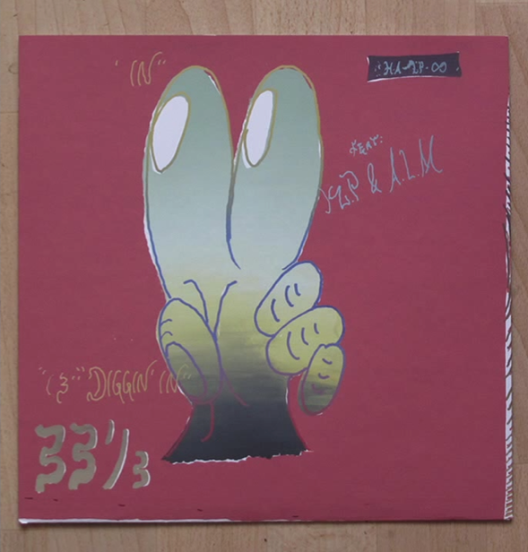

Diggin' In · 2012
About:
"Kristian Poulsen and Anders Lauge Meldgaard have played together
on many occations around the experimental music and art sceen in Copenhagen.
They have played a lot in various improvised guitar groups, exploring the
possibilities of using small battery powered guitaramps to enable concerts
in obscues places around the city of Copenhagen, as well as getting into
intense loud guitar trance improvisations performed on huge, heavy guitar
stacks in art gallerys and venues like Mayhem ect. These electric guitar
experiments have also been a strong influence on Anders Lauge Meldgaards
compositions "Musik for seks elektriske guitarer" released last year by Jvtlandt and yoyooyoy.
The first time Poulsen and Meldgaard played together as a guitar/saxofon duo,
was in the imployes restroom of Copenhagen Jazzhouse doing yoyooyoy's multi
locational concert installoation called "Alone together; Burger" in 2009.
The extrem intimacy of this performace led to the desire of doing recordings together.
The music in this present recording as an improvisation recorded directly to
* 2-track tape by the two artist them self, no post production or else was made later in the process.
Mads Vestrup is a painter located in Vienna and running the label Halloween Creativity,
releasing small editions with hand printed silkscreen covers.
Diggin' In is released as 75 12" vinyl records and 33 cassette tapes.
Etching on the 12" vinyl and silkscreen cover by Mads Vestrup."
